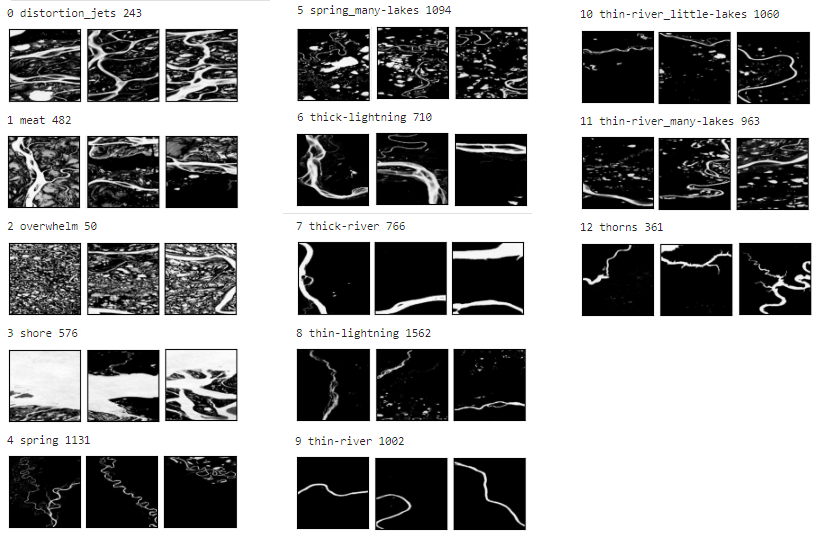
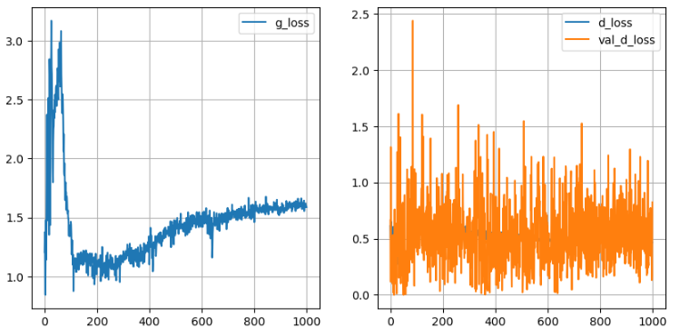

Как это делалось
Сначала на платформе Google Earth Engine был получен доступ к данным
«JRC Global Surface Water Mapping Layers, v1.3».
Из них были сформированы изображения размером 256x256 пикселей, яркость которых отражает частоту присутствия воды («the frequency with which water was present»)
на соответствующих участках поверхности. При линейном разрешении 30 м одно иозбражение охватит участок ~7 км.
Для уменьшения затрат времени на получение и дальнейшую обработку изображений область, на которой формировались изображения,
была ограничена границами России, полученные из набора данных
«LSIB 2017: Large Scale International Boundary Polygons, Simplified».
Так было получено около 78 тысяч изображений. Большинство изображений оказались почти полностью чёрными.
Также, некоторые изображения, соответствующие крайним северным частям страны, оказались с артефактами,
напоминающими сильные помехи. После фильтрации по средней яркости и удаления изображений с артефактами,
осталось 10 тысяч изображений.
Около тысячи изображений были вручную классифицированы в 13 классов.
Классификация проводилась только по визуальной схожести рисунков.
Рассматривались такие признаки как: наличие реки, ширина реки, извилистость реки,
наличие нескольких русел, наличие озёр, количество и размер озёр и др.
Затем, используя "fine tuning" модели VGG16, были отклассифицированы оставшиеся изображения.

Полученный набор изображений был использован для обучения генеративно-состязательной модели.
Из-за недостаточного количества данных для обучения такой модели, размер всех изображений был
уменьшен до 28x28 пикселей. Генеративная модель принимает 64 значения (при тренировке генерировались
случайные значения по нормальному распределению) + 13 значений которые соответствуют классу
изображения (one hot encoding). Генеративная модель имеет около 700 тысяч параметров.
Создание и обучение модели производились на платформе Kaggle.
Для создания модели использовалась библиотека Keras.
Модель и её веса после обучения были экспортированы в формат, который можно использовать в браузере.
Как только завершится загрузка модели, на фоне этой страницы начнут появляться примеры работы генератора.

Первая строчка кода этого проекта была написана 7 августа 2022 года. И ровно через год, 7 августа 2023 года
я дописываю скрипт для генерации изображений в браузере. Я ознакомился с некоторыми этапами создания
нейросетей и при работе чувствовал, что то, что я пишу, находится на грани моих способностей.
Стало понятно, что дальнейшего продвижения мне необходимо изучить основы методов машинного
обучения и библиотек для их реализации.
Набор данных доступен по ссылке: https://disk.yandex.ru/d/ZgQY256sCSSYPQ.
Исходный код разделён на два Jupyter-ноутбука, доступным по ссылкам:
- Классификатор
- Нервосеть